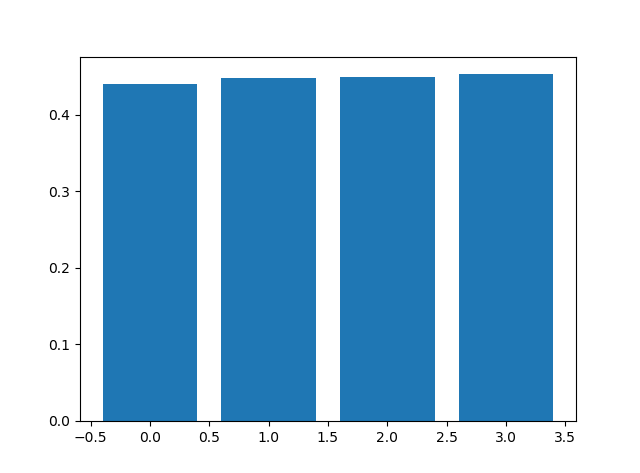
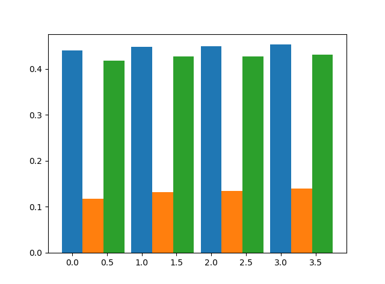
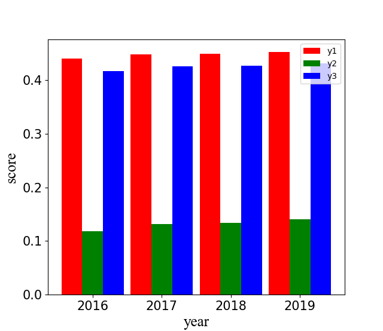
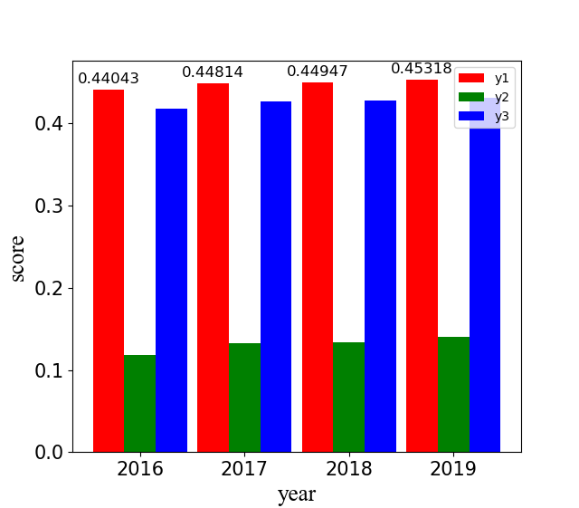
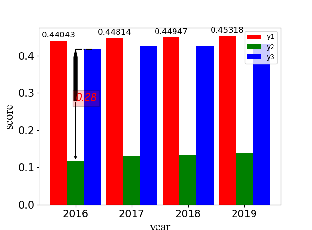

本期学习内容：
画柱状图
annotation标注
自定义子图大小及位置
测试数据 1 2 3 4 x = np.array([i for i in range(4)]) y1 = [0.44043, 0.44814, 0.44947, 0.45318] y2 = [0.11813, 0.13223, 0.13403, 0.14040] y3 = [0.41772, 0.42667, 0.42757, 0.43143]
柱状图 首先创建画布及子图：
1 2 fig = plt.figure() ax1 = fig.add_subplot(111)
基本柱状图 画最基本的柱状图，只需提供x轴和y轴对应的高度即可：

多组数据 如果需要多组数据显示在同一个柱状图中，则需要考虑每个柱的宽度
1 2 3 4 5 6 7 total_width = 0.9 count = 3 width = total_width/count rect1 = ax1.bar(x, y1, width=width) # 注意设置每个bar的width属性，控制该条形的宽度 rect2 = ax1.bar(x + width, y2, width=width) # x轴要进行相应的偏移，偏移大小就是一个width rect3 = ax1.bar(x + 2*width, y3, width=width)

x轴标签 假设每组数据有对应的标签。
1 labels = ["2016", "2017", "2018", "2019"]
我们希望每组标签正好在每组数据的中间，就需要通过调整x轴坐标，并替换x轴坐标的名字即可：
1 2 3 4 5 6 7 8 9 10 11 12 13 14 15 rect1 = ax1.bar(x, y1, width=width, label="y1", fc='red') # 这个label设置该组数据的图例，这里是y1 rect2 = ax1.bar(x + width, y2, width=width, label='y2', fc='green') # fc 设置条形颜色 rect3 = ax1.bar(x + 2*width, y3, width=width, label='y3', 'fc=blue') plt.legend(loc='best') # 设置图例位置为best ax1.set_xticks([0.3, 1.3, 2.3, 3.3]) # 通过上面图可以计算出每组数据的中间的横坐标，这里分别为[0.3, 1.3, 2.3, 3.3] ax1.set_xticklabels(labels) # 将x轴坐标替换成labels的名字 plt.tick_params(labelsize=15) # 设置label的字体大小 # 设置字体font1 font1 = {'family': 'Times New Roman', 'weight': 'normal', 'size': 12, } plt.ylabel("score", font1) # 使用字体font1设置ylabel plt.xlabel("year", font1)

设置每个条形上面显示数值 定义如下函数：
1 2 3 4 5 6 7 8 9 def autolabel(rects, ax): """Attach a text label above each bar in *rects*, displaying its height.""" for rect in rects: height = rect.get_height() ax.annotate('{}'.format(height), xy=(rect.get_x() + rect.get_width() / 2, height), xytext=(0, 3), # 3 points vertical offset textcoords="offset points", ha='center', va='bottom', fontsize=12)
然后使用如下语句进行标注
1 autolabel(rect1, ax1) # 参数为条形rect和子图ax1

annotate标注 及 text标注 annotate可以用来对图中的内容进行标注，可以画箭头来指示说明。
1 2 3 4 plt.annotate("", xy=(0.3, 0.11813), xytext=(0.3, (0.14040+0.41772)/2), arrowprops=dict(arrowstyle='->')) plt.annotate("", xy=(0.3, 0.41772), xytext=(0.3, (0.14040+0.41772)/2), arrowprops=dict(width=5, headwidth=5, facecolor='black')) plt.plot([0.3, 0.6], [0.41772, 0.41772], color='black', linestyle='-.') plt.text(0.3, (0.14040+0.41772)/2, "%.2f"%(0.41772-0.14040), size=15, family='fantasy', color='red', style='italic', weight='light', bbox=dict(facecolor='red', alpha=0.2))
annotate 参数： 注意如果属性中有arrowstyle，则不能再设置下面几项属性。
plot参数
text参数
参数
说明
alpha
设置字体的透明度
family
设置字体
size
设置字体的大小
style
设置字体的风格
wight
字体的粗细
bbox
给字体添加框
alpha
设置框体的透明度
facecolor
设置框体的颜色
自定义子图大小 有时我们需要自定义子图的大小及位置，subplots()或者add_subplot()函数不能满足我们的需求，我们可以自定义子图大小及位置。
1 2 3 4 5 6 7 ax1_size = [0.1, 0.1, 0.5, 0.5] # 左，下，宽，高。全部是小于1的小数，表示比例 ax1 = plt.axes(ax1_size) ax1.plot(x, y1) ax2_size = [0.6, 0.6, 0.4, 0.4] ax2 = plt.axes(ax2_size) ax2.plot(x, y2) plt.show()
首先设置子图的大小及位置，也就是ax1_size，四个元素分表表示子图的左，下，宽，高，四个数都是小于1的小数，表示比例。